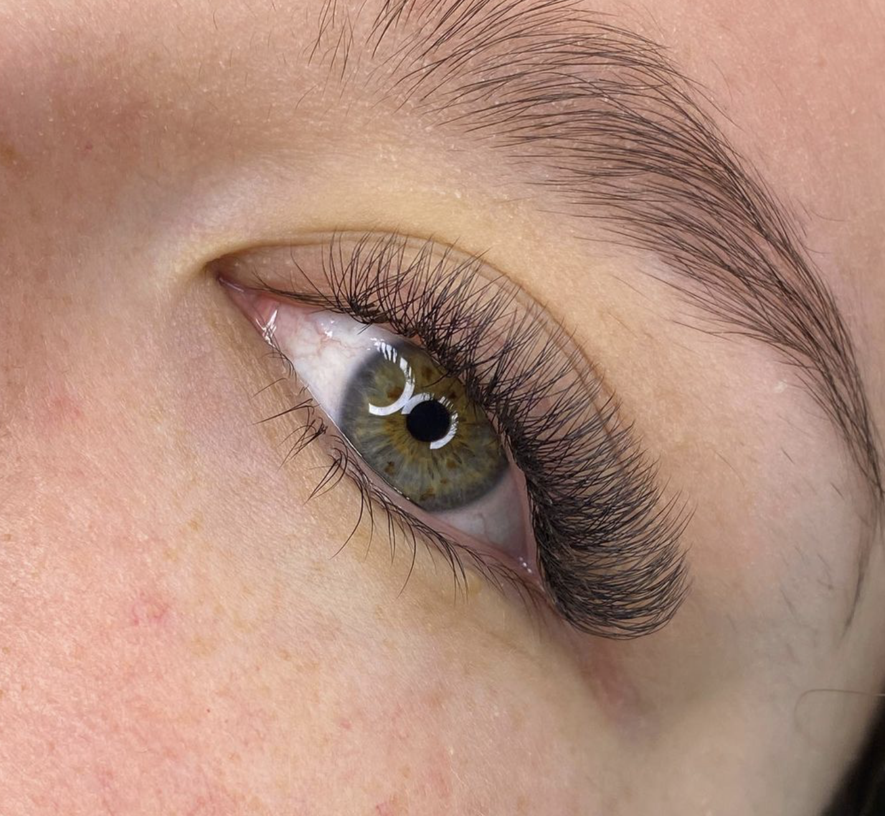

Técnica clásica
Esta técnica consiste e adherir a cada una de tus pestañas naturales una extensión de pestaña , la cantidad de pestañas es variada.
Efecto Rímel

Consiste en pegar de 2 a 3 extensiones en cada pestaña natural, creando un look de más volumen y maquillaje
Efecto Wispy

Técnica especial que utiliza extensiones de pestañas individuales de diferentes longitudes, rizos y grosores para lograr un aspecto ligero, de aspecto natural pero voluminoso
Volumen Tecnológico 3D / 4D / 5D
Con esta técnica se trabaja el volumen de la pestaña y es perfecta para aquellas personas con poca densidad que buscan un efecto más tupido. Las 3D te dan el triple de volumen a tus pestañas, aportando además brillo y expresividad, logrando así una mirada enigmática.
Closed Fans
El efecto de closed fan es mucho más tupido y negro que un efecto rímel, y al ser abanicos semi abiertos dan mucho más volumen
Pestañas de Color y Brillo
Este servicio es pensado en aquellas mujeres que buscan destacar su personalidad y tener un look original en su día a día.